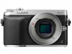

器材库 > APS及其以下画幅可换镜头数码相机 > DMC-GX7

规格总览
产品类型
M4/3画幅可换镜头数码相机
发布日期
2013-08-01
厂家推荐价格
105,000.00 （日元）
影像规格
影像传感器
Live MOS
影像传感器尺寸
17.3 x 13.0 mm
总像素
1684万
有效像素
1600万
影像处理器
维纳斯
色彩空间
sRGB, Adobe RGB
最大解像度
4592 x 3448
静态图像尺寸
[4:3] 4,592 x 3,448 (L) [16M] /[3:2] 4592×3064[16:9] 4592×2584[1:1] 3424×3424(L)
静态图像格式
JPEG, RAW, MPO
静态图像质量
RAW, RAW+Fine, RAW+Standard, Fine, Standard
画幅比
3:2, 4:3, 16:9, 1:1
短片尺寸
[AVCHD] 1920×1080p@60p/60i
短片格式
AVCHD, MP4
防抖系统
机身防抖
除尘系统
超声波除尘系统
镜头和对焦
镜头卡口
Micro 4/3
兼容镜头
通过转接环可使用4/3卡口镜头
对焦模式
AF / MF / 脸部检测 / AF追踪 / 23区对焦 / 1区对焦/EV -4～18
AF辅助灯
有
曝光控制
测光模式
中央重点测光, 多分区评价测光, 点测光
测光范围
0EV~18EV
曝光模式
Auto, P（程序自动曝光）, A（光圈优先自动曝光）, S（快门速度优先自动曝光）, M（手动测光曝光）
场景模式
夜景, 食物, 宠物, 日落, 聚会, 人像, 风景, 运动, 夜间人像, 柔肤, 建筑, 鲜花, 周边失焦, 物体, 宝宝, 室外人像, 室内人像, 创意人像, 自然, 创意风景, 创意近摄
快门速度
60 - 1/8000秒, B门
曝光补偿
±5EV以1/3EV级调整
自动曝光锁
有
自动包围曝光
3、5、7幅，±3EV 以1/3或2/3或1EV为步长调整
ISO感光度
200, 400, 800, 1600, 3200, 6400, 12800, 自动, 智能ISO, 125, 25600
白平衡
日光, 白炽灯, 闪光灯, 色温调节, 阴天, 阴影, 自动, 预设白平衡, 晴天
自拍
10秒, 2秒, 10秒, 3张
连拍
高速（H）: 约5张/秒(AFS时) / 约4.3张/秒(AFC秒)
闪光灯
内置闪光灯
弹出式
闪光模式
TTL
闪光指数
GN.5（ISO100・m)
闪光同步模式
慢速同步, 防红眼同步, 防红眼慢速同步
取景器/显示屏
取景器
EVF电子取景器
取景范围
100%
取景放大倍率
1.39倍(等效135画幅为0.7倍)倍
屈光度调节范围
17.5mm（-1m-1時） / -4.0～+3.0（dpt）
LCD类型
低温多晶硅TFT LCD
LCD尺寸
3.0英寸
LCD像素
104万
视野率
100%
LCD特性
触摸屏, 翻转屏
文件输入/输出
存储卡
SD/SDHC, SDXC
数据接口
USB2.0
视频/音频接口
MIC 输入, Video 输出 (NTSC/PAL), HDMI Mini 输出
无线功能
Wi-Fi, NFC
支持打印协议
PictBridge, DPOF
电源
电池
7.2V / 1025mAh（7.4Wh）可充电锂电池
外接电源
AC电源适配器
机身规格
颜色
黑色, 银/黑色
尺寸
122.6x70.7x54.6mm
重量
402g
其它
配件端口
热靴
备注
内置手动补正功能和Wi-Fi/NFC功能
hongweiyi19862014-05-19 09:194.56 分
操作性 4.50功能性 4.50美观性 4.00趣味性 4.00耐用性 4.50性价比 5.00解像力 5.00色彩还原 5.00
产品图 / 样片
评测 / 相关文章
- 详细内容 （存档）
- 内外皆防抖 松下DMC-GX7详细评测 （存档）
- ［试用］GF1, GF5, GX1, GX7, GM1 我的M4/3旅程 （存档）
- ［试用］松下GX7入手初体验 （存档）
- ［试用］松下GX7开箱照无忌首发 （存档）
- ［资讯］松下在日本召开LUMIX GX7试用专场 （存档）
- ［试用］松下DMC-GX7(β版)初体验 （存档）
- ［资讯］松下DMC-GX7新机图赏 （存档）
相关文章
- ［试用］小半幅里也有大爱 （原站已下线）
- ［试用］GF1, GF5, GX1, GX7, GM1 我的M4/3旅程 （存档）
- ［试用］内外皆防抖 松下DMC-GX7详细评测 （存档）
- ［试用］松下GX7入手初体验 （存档）
- ［试用］松下GX7开箱照无忌首发 （存档）
- ［资讯］松下在日本召开LUMIX GX7试用专场 （存档）
- ［试用］松下DMC-GX7(β版)初体验 （存档）
- ［资讯］松下DMC-GX7新机图赏 （存档）
- ［资讯］松下DMC-GX7 （存档）